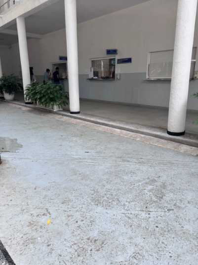
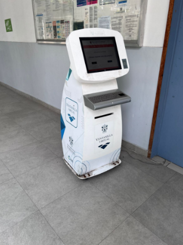

¿Qué hace?
La Coordinación de Control Escolar del CUCEI es responsable de la administración y control de los procesos académicos y administrativos de los estudiantes del CUCEI. Entre sus funciones se encuentran:
Servicios
Trámites
Los costos y tiempos de los trámites en la Coordinación de Control Escolar del CUCEI varían según el trámite. En general, los trámites tienen un costo de $100, excepto los siguientes:
El proceso para realizar un trámite en la Coordinación de Control Escolar del CUCEI varía según el trámite e incluye los siguientes pasos generales:
1. Ingresar a la página web del CUCEI y registrarse en el Sistema de Información Académica y Administrativa (SIATCE).2. Solicitar el trámite en el SIATCE.
3. Pagar el costo del trámite.
4. Presentar la documentación requerida en la Coordinación de Control Escolar.
Ubicación
La Coordinación de Control Escolar del CUCEI es responsable de la administración y control de los procesos académicos y administrativos de los estudiantes del CUCEI. Entre sus funciones se encuentran:

SIATCE
SIATCE es el Sistema de Atención Electrónica al Estudiante, un portal web que permite a los estudiantes de la Universidad de Guadalajara realizar una serie de trámites y consultas de manera electrónica.
El SIATCE está disponible para todos los estudiantes de la Universidad de Guadalajara, independientemente de su campus o carrera. Para acceder al SIATCE, los estudiantes deben ingresar su número de matrícula y contraseña.
Entre los trámites que se pueden realizar a través del SIATCE se encuentran:
El SIATCE es una herramienta útil para los estudiantes de la Universidad de Guadalajara, ya que les permite realizar sus trámites de manera rápida y sencilla.

Beneficios del SIATCE:
El SIATCE está en constante desarrollo. La Universidad de Guadalajara está trabajando para agregar nuevos trámites y servicios al SIATCE con el objetivo de brindar una mejor atención a sus estudiantes.
Si eres estudiante de la Universidad de Guadalajara, te recomiendo que visites el sitio web del SIATCE para conocer todos los trámites y servicios que ofrece.
Página Web: http://escolar.cucei.udg.mx/cescolar/